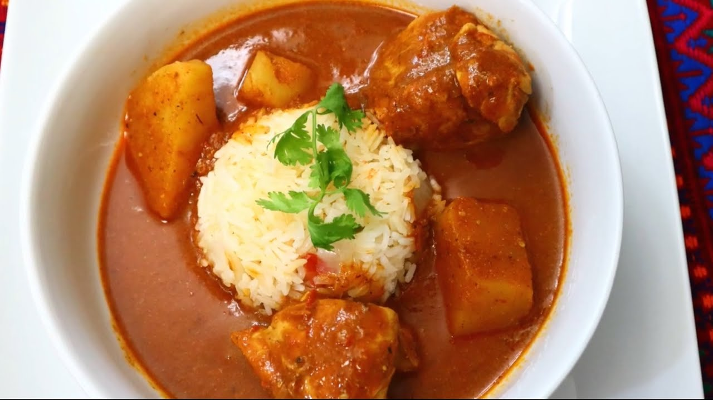

Según los historiadores, la evolución del pepián se centra en la historia de la nación, ya que fue en los fogones en donde por primera vez se mezclaron los condimentos de las comidas rituales del pueblo, con ingredientes precolombinos y los de origen hispano-árabe. El origen del pepián se remonta a la segunda mitad del siglo XVI, con el nacimiento de las cofradías, que permitieron la fusión de los Mayas y Españoles. Cuentan que en el mundo prehispánico se servía el pepián en grandes ceremonias o rituales, relacionadas con la religión y la política. Es así como los integrantes de las cofradías rescataron esta tradición y convirtieron al pepián en la comida ceremonial por excelencia del país. En la actualidad es reconocido como uno de los productos nacionales más enraizados en la historia de Guatemala. El 26 de noviembre de 2007 fue declarado Patrimonio Cultural Intangible de la Nación por el Ministerio de Cultura y Deportes. Fue el Acuerdo Ministerial 801-2007 el que le otorgó el reconocimiento al pepián.
